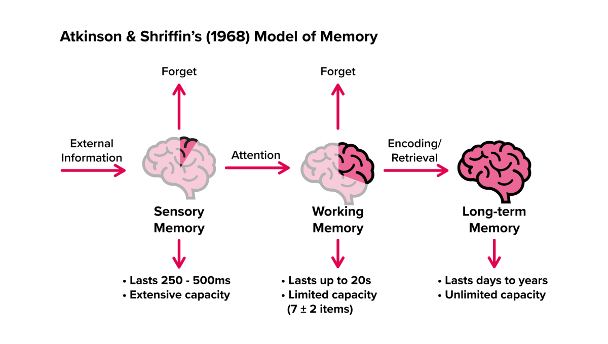

Memory#
人的记忆#

类型 |
主要功能 |
保存时间 |
容量 |
典型特点 |
|---|---|---|---|---|
感官记忆（Sensory Memory） |
捕捉并保留外界刺激的原始感官信息 |
极短暂：0.2 – 3 秒 |
极大（以感官输入为限） |
自动、无意识；依赖感觉通道（如视觉的图像记忆 iconic、听觉的回声记忆 echoic） |
工作记忆（Working Memory） |
对进入注意焦点的信息进行暂时加工、操作与整合 |
短暂：约 10 – 20 秒（经主动复述可延长） |
约 4 ± 1 个“组块” |
又称“短时记忆”；包含中央执行系统及语音环路、视觉空间草图等子系统；是推理、理解、问题解决的核心 |
长期记忆（Long-Term Memory） |
长期储存个人经验、知识与技能 |
数分钟至终生 |
理论上无限 |
可分显性/陈述性（语义记忆、情景记忆）与隐性/程序性记忆；通过编码、巩固、检索三阶段运作 |
记忆流程概览#
输入：外界刺激首先进入感官记忆。
注意：被注意的信息转入工作记忆，进行加工与暂存。
编码与巩固：通过复述、联想、深层加工等机制，将部分工作记忆内容编码到长期记忆，并在睡眠等过程中进一步巩固。
检索：需要时，长期记忆中的信息被提取回工作记忆以供使用。
ℹ小贴士
充分利用“组块化”“间隔复习”“多模态编码”可以提升长期记忆效果。
保持充足睡眠有助于记忆巩固。
在学习中主动回忆胜过一味重读，可强化检索路径。